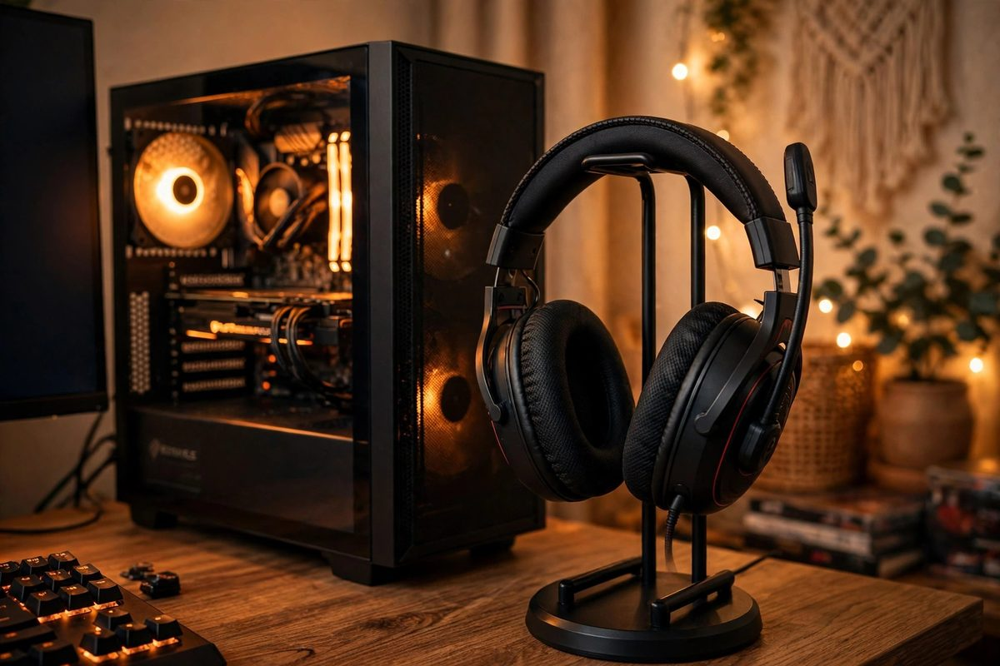

Best Audio Settings for PUBG on PC: Hear Every Footstep

In PUBG, sound is information. A footstep on the floor above you, a distant vehicle, a window breaking two houses away: each sound tells you where danger is before you see it. Good audio settings and a decent headset give you that warning a second earlier, and that second wins fights. This guide shows you how to set it all up.
Start With the Right Headset
Speakers cannot compete with a headset for directional audio in PUBG. A stereo headset with large drivers and a comfortable fit is the best choice for most players, and it does not need to be expensive. Look for clear mid-range sound rather than heavy bass, because footsteps and reloads live in the mid and high frequencies, which exaggerated bass drowns out.
Virtual surround sound can help or hurt. Some players love it for judging direction, while others find it makes sounds vague. Try a few matches with it on and a few with it off, and keep whichever lets you judge direction better. Whatever you choose, wear the headset the right way round: reversed ear cups flip left and right.
In-Game Audio Settings
Inside PUBG, open Settings, then Audio. Set the master volume high enough that quiet sounds are audible, usually 80 to 100, and keep music low or off so it never masks a footstep. Turn the UI sound down slightly so menu clicks do not compete with game sounds. The most important setting is HRTF, which stands for head-related transfer function: it simulates how sound reaches each ear, making direction much easier to judge. Turn HRTF on and leave it on.
Set sound quality to the highest option and make sure your Windows sound device is set to stereo, not 5.1 or 7.1, when using HRTF. If Windows sends multi-channel audio to a stereo headset, the directional cues get mixed up. Restart the game after changing these settings.
Windows and Driver Settings
Windows has several audio features that hurt competitive play. Turn off loudness equalization and bass boost in your sound device properties, because they compress the difference between quiet and loud sounds, making distant footsteps as loud as nearby ones. Also disable Windows audio enhancements if your headset software has its own equalizer.
Set your headset as the default communication and playback device, and keep its sample rate at 44.1 kHz or 48 kHz. Higher sample rates do not improve footsteps and can cause compatibility problems with some headsets. If your headset has a companion app, use it to check for firmware updates and set a flat or balanced preset.
EQ Settings for Footsteps
A gentle equalizer adjustment can make footsteps clearer without ruining the rest of the game's sound. Footsteps sit mostly in the 2 to 5 kHz range, so a small boost there helps them cut through gunfire and vehicle noise. Cut the lowest frequencies slightly to reduce booming explosions and engine rumble, and avoid boosting very high frequencies, which adds hiss.
| Frequency | Adjustment | Effect |
|---|---|---|
| 60-125 Hz | -2 to -3 dB | Less explosion and engine boom |
| 250-500 Hz | Flat | Keeps voices and ambient sound natural |
| 2-4 kHz | +2 to +3 dB | Footsteps and reloads stand out |
| 8 kHz+ | Flat or -1 dB | Avoids harsh hiss |
Keep adjustments small. An extreme equalizer curve sounds impressive for five minutes and tiring after an hour, and it can mask the volume differences that tell you how far away a sound is.
Tip: Train your ears in Training Mode. Have a teammate walk around you in a building while your eyes are closed, and call out the direction before you look. Ten minutes a few times a week builds sound awareness faster than any settings change.
Volume Balance and Hearing Safety
It is tempting to turn the volume up to maximum so you never miss a sound, but that damages your hearing and makes gunfire painful. Find a level where you can hear a teammate walking quietly nearby, then stop there. In a noisy room, a closed-back headset blocks outside noise better than an open-back one, letting you hear more at a safer volume.
Balance voice chat against game sound so callouts never drown out footsteps. In PUBG, set voice chat volume to a level where teammates are clear but not louder than the game, and ask your squad to use push-to-talk so background noise does not fill your ears. Take a short break every hour or two: rested ears hear better.
Common Audio Problems and Fixes
If footsteps sound like they come from everywhere at once, check that HRTF is on, Windows is set to stereo, and no second surround effect is running in your headset software. If game audio crackles, try a different USB port, update your headset drivers, and close background apps using audio, such as music players.
If you hear nothing at all, confirm the headset is the default playback device, check the in-game master volume, and test the headset in another app. If a teammate is too quiet, raise voice chat volume rather than the master volume, so gunfire does not get louder too.
Frequently Asked Questions
Should I turn on HRTF in PUBG?
Yes. HRTF improves directional audio with a stereo headset, making it much easier to tell whether a footstep is in front of you, behind you, above or below. Keep it on and set Windows to stereo output for the best result.
Do I need a 7.1 surround headset for PUBG?
No. A good stereo headset with HRTF enabled gives accurate directional sound. Expensive virtual surround can help some players, but it is not required and many competitive players prefer plain stereo.
Why can't I hear footsteps in PUBG?
Common causes are HRTF turned off, Windows set to multi-channel output, loudness equalization compressing the sound, or music and UI volume set too high. Fix those settings first, then check your headset fit and volume level.
Download PUBG Now
Get the official game from the official stores. PUBG on PC is free to play on Steam; PUBG Mobile is available on Google Play and the App Store.